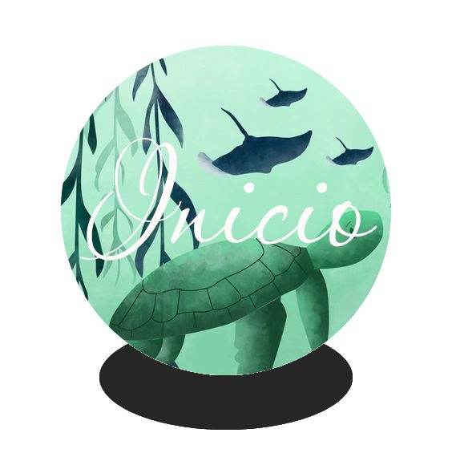

ESTILOS DE BOTONES
1. BOTONES CUADRADOS SENCILLOS

Cuidar el medio ambiente no es un capricho, sino una necesidad. Se trata de un conjunto de acciones que debemos realizar entre todos para evitar la destrucción de nuestro planeta, a pesar de que en los últimos años parece que contribuimos más en deteriorarlo. Con la colaboración conjunta podemos conseguir grandes objetivos, pero para eso es imprescindible aportar millones de granitos de arena. Solo así se puede garantizar la sostenibilidad de la Tierra, que actualmente no atraviesa su mejor momento y nos castiga con desastres medioambientales de una magnitud enorme. Es por eso que en este resumen de cómo cuidar el medio ambiente de EcologíaVerde te mostramos las distintas acciones para mejorar el cuidados de nuestro entorno.